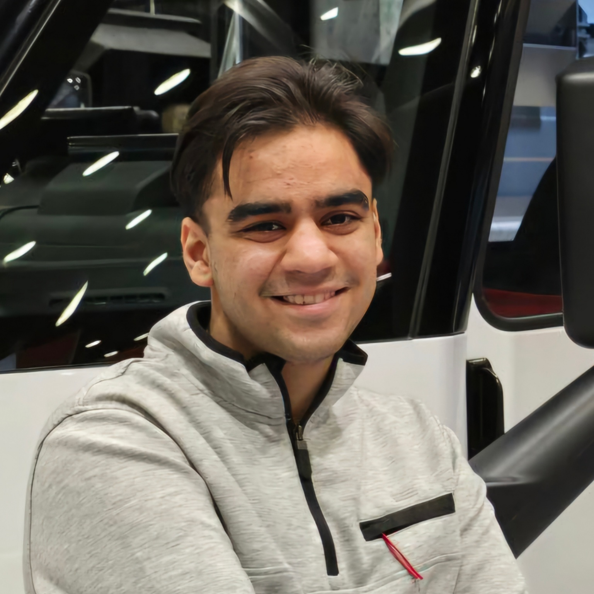
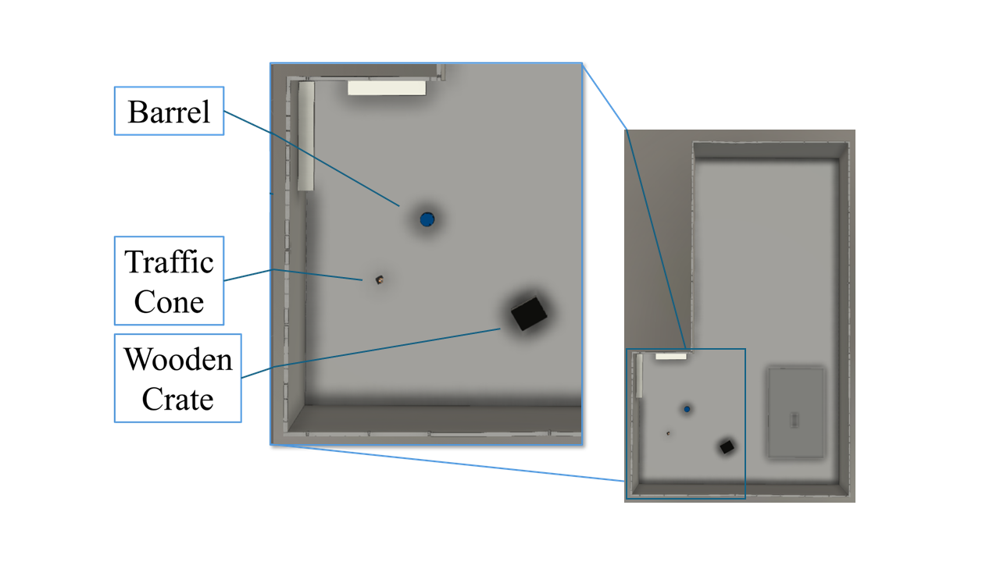
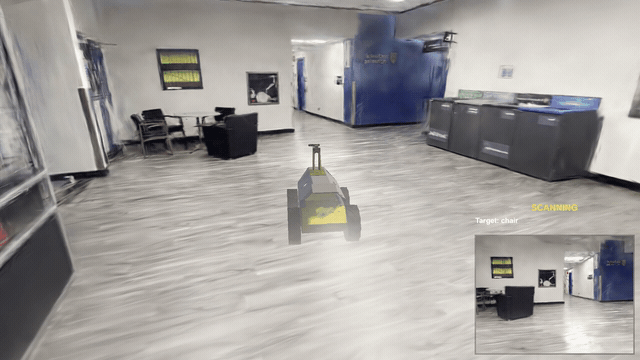
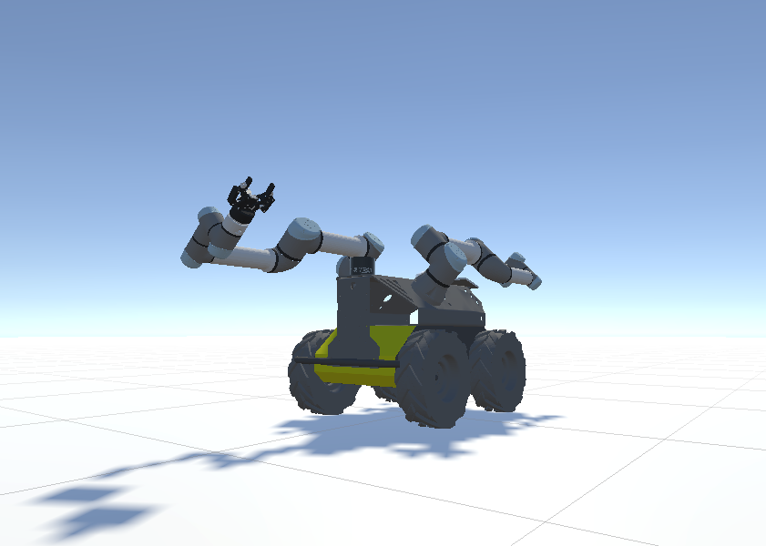

Undergraduate Student, San Diego State University
B.S. Applied Mathematics, emphasis in Computer Science

I am an undergraduate student at San Diego State University majoring in Applied Mathematics with an emphasis in Computer Science. I work as a research assistant in the Data-Informed Construction Engineering (DiCE) Lab under Prof. Reza Akhavian.
My research interests include robotics, autonomous navigation, digital twins, and machine learning.

Building Information Models to Robot-Ready Site Digital Twins (BIM2RDT): An Agentic AI Safety-First Framework
Automation in Construction, 2026. Under review.

Active-Perception Robot in Gaussian-Splat Scenes
A simulated mobile robot (Husky base with a pan/tilt camera neck) that searches a 3D Gaussian-splat scene for a natural-language target such as "chair" or "exit sign". The base and neck share a coverage map to explore efficiently, an OWL-ViT process handles open-vocabulary detection, and the robot pauses to confirm an object across several sightings before committing.

Husky VR Teleoperation System
A VR teleoperation system for the Clearpath Husky A200 with dual UR5e arms, a pan/tilt neck, and stereo cameras. Operators use a Meta Quest headset to drive the robot in real time over a ROS 2 + Unity bridge, for loco-manipulation data collection.
RRT* with Prompt: Natural Language Motion Planning
A natural-language motion planner where OpenAI's API turns user prompts into RRT* parameters for goal bias, safety, and exploration. The custom C++ RRT* uses feature-based sampling and path smoothing, deployed on a Clearpath Jackal in ROS 2 / Gazebo.
Generating Functions as a Counting Tool
A 23-page expository paper on ordinary and exponential generating functions and their applications to counting problems, including partitions, Catalan numbers, Dyck paths, compositions, and the exponential formula.